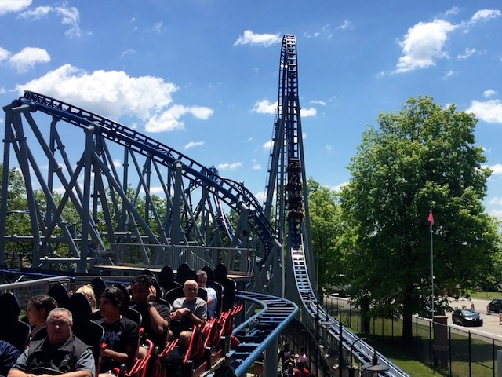
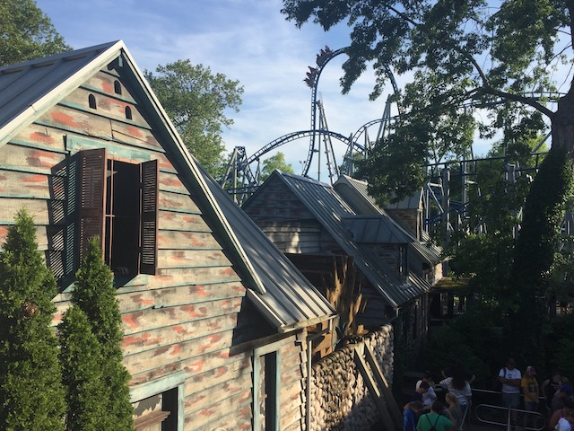
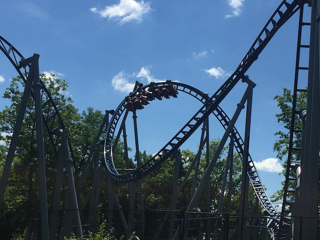

| |
Sky Rocket Review

We're here at Kennywood. Today's ride we'll be reviewing for you is Sky Rocket. Yeah. You know all those very popular Sky Rocket II models that have been popping up like daisies this past decade and are a contender as being the Batman the Ride of the 2010s? Well, this is the original model. Yep. This is the ride that inspired that super popular coaster clone model. And I have to say. This is a REALLY fun ride. Hell, I kind of prefer this to the far more popular Sky Rocket II models. I know it doesn't look like anything too special. But this is just a really fun ride. So yeah. We hop in the cars, buckle the seatbelts, pull down the lap bar, and we're off. We roll around a turn before we go straight into the launch track. While this isn't the most insane launch by any means, it does give us a nice kick of speed. So far, nothing special. But we're off to a fun start nonetheless. You then head up a top hat. It may not look super big, so it's not something that you really pay much attention to. But this vertical spike packs quite a punch. You get a nice pop of ejector air at the top of the hill. And heading back down the vertical spike, we get most of our speed back. Yeah. I'm definately starting to like this ride. We then head into a cutback. This is something that at one point, was a really rare inversion. Partially because it made its origin on Drachen Fire. And....that ride was NOT a success to put it lightly. But they've made a comeback. And they're a lot of fun. Granted, this kind of feels like an overbanked turn. But....it still counts as an inversion. And it has a nice little whip to it. We then head into a Heartline Spin. And....this is a decent one. It may not have quite as much whip as some of the best B&Ms from the 90s. But it has more than all the tame rides they've built recently. We then head up a curved hill and head into a midcourse brake. We lose our speed, and....sadly, it's gonna become a bit more tame from here on out. The ride is starting to wind down. But hey. We drop back down and get some more speed back. Go around a quick little turn before going into the corkscrew. This little thing has a nice bite to it as we tumble our way through it. We then head through another turn and go into....this S-Bend section. I know a lot of enthusiasts will criticize this section. It's dumb. It's meandering. And....yeah. It is. But....there's something about this that I honestly find endearing. You know....the more I think about it, the more I realize that this ride is INCREDIBLY similar to Wicked. From the launch, to the tower, to the cutback, to the inline twist, to the meandering family coaster second half. HOLY SH*T!!! Sky Rocket is Wicked! No wonder I like this ride so much! =) We then head around another turn, and start to head into some bunny hops. Sadly, these bunny hops are pretty tame. Not very much airtime on them at all. But we're still having fun regardless. We head through another bunny hop and glide right into the brake run. And....this is a really fun ride. Sure, if intensity is all you care about, then this probably isn't going to be your favorite ride. And....I am a big fan of intensity. However, this still was better than I was expecting. Particuarly with that pop of airtime on the vertical hill and the whip in the cutback and Heartline Spin. It's a pretty unique ride and something that is definately worth a ride if you're at Kennywood.
7/10
Location: Kennywood
Opened: 2010
Built by: Premier
Last Ridden: June 23, 2021
Sky Rocket Photos






Home
|